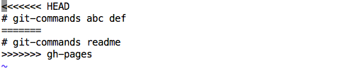
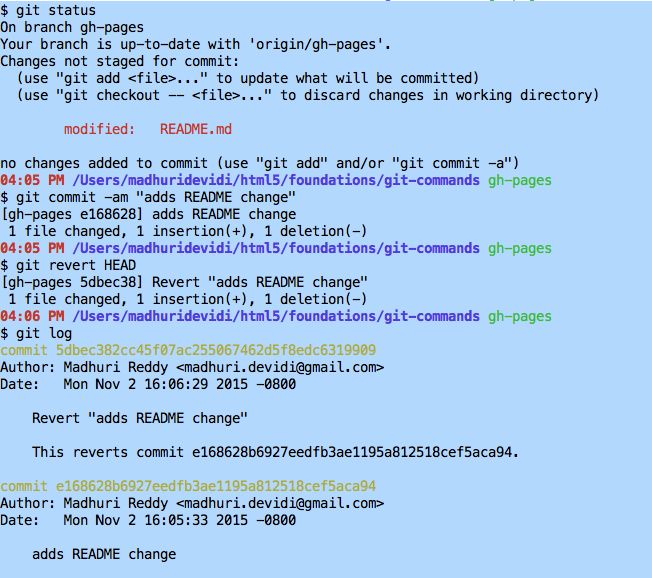

Go to github.com and create an account. It is free. Create a repo called git-commands. Then from your computer, download and install git. Create a directory with the name you used for repo name. Set configs as shown below. These will be specific to a single repository.
$ git init $ git config user.name "somebody" $ git config user.email somebody@somebody.com
Local config will be in your repository's .git/config file. Global will be in ~/.gitconfig
From command line cd into the directory and do the following: echo "# comments" >> README.md git add README.md git commit -m "first commit" git remote add origin https://github.com/USERNAME/git-commands.git git push -u origin master
As you edit files, Git sees them as modified, because you’ve changed them since your last commit. You stage these modified files and then commit all your staged changes, and the cycle repeats.
To add git auto completion do the following steps.
Add the following to your .bash_profile and source it.
if [ -f ~/.git-completion.bash ]; then source ~/.git-completion.bash fi
git diff below diffs origin and local
If we want to diff the changes to a file in a branch to the file in master branch:
04:16 PM /Users/madhuridevidi/html5/foundations/git-commands gh-pages
$ git diff Show differences between your working directory and the staging index. $ git diff –staged Show differences between the index and the most recent commit. $ git diff HEAD Show the differences between your working directory and the most recent commit.
$ git config --global alias.logline "log --graph --pretty=format:'%Cred%h%Creset -%C(yellow)%d%Creset %s %Cgreen(%cr) %C(bold blue)<%an>%Creset' --abbrev-commit"
$ git config --global alias.slog "log --pretty=oneline --abbrev-commit"
$ git slog
1fa0979 HEAD pointer 982a86b added p tag a2e83d8 added p tag
cat .git/HEAD
cat .git/refs/heads/master

git log shows recent two logs
$ git log --pretty="%h - %s" --author=Madhuri --since="2015-11-01" -2
$ git log --pretty=format:"%h - %an, %ar : %s" -2

git log --pretty=format:"%h %ad | %s%d [%an]" --graph --date=short
git log --graph --oneline --decorate --date=relative --all
Whenever you merge checkout the branch you want the changes to be merged into


Shows changes
$ git show --pretty="format:" --name-only bd61ad98
$ git show --pretty="format:" b8386ca443..cd04d9e530
Also, if you commit and then realize you forgot to stage the changes in a file you wanted to add to this commit, you can do something like this:
$ git commit -m 'initial commit' $ git add forgotten_file $ git commit --amend
$ git revert HEAD
$ git revert cd04d9e530
$ git revert HEAD --no-edit

Since we were undoing the very last commit we made, we were able to use HEAD as the argument to revert. We can revert any arbitrary commit earlier in history by simply specifying its hash value.
git reset --soft - does not change the staging index or the working copy, only changes the repo, most recent changes are in staging and working copy --mixed(default) - repo and staging index only --hard - changes the repo, cages the staging index and working copy
The primary reason for rebasing is to maintain a linear project history.
There are two options for integrating a feature into the master branch: merging directly or rebasing and then merging. The former option results in a 3-way merge and a merge commit, while the latter results in a fast-forward merge and a perfectly linear history.
It is also used to squash commits, split commits, change commit message or add/remove files in commit, switch the order of commits
Assume the following history exists and the current branch is "topic":
A---B---C topic
/
D---E---F---G master
From this point, the result of either of the following commands:
$ git rebase master
$ git rebase master topic
would be:
A'--B'--C' topic
/
D---E---F---G master
Git cherry-pick behaves just like merge. If git can’t apply the changes (e.g. you get merge conflicts), git leaves you to resolve the conflicts manually and make the commit yourself.
$ git stash save "comment"
$ git stash list
$ git stash pop
$ git stash apply stash@{1}
$ git stash drop stash@{1}
To create a patch from the last two commits in one branch(master) and correctly apply this patch to another(gh-pages) repository, do the following:
$ $ git format-patch gh-pages --stdout > fix-three-tier-image-style.patch
$ git apply --stat fix-three-tier-image-style.patch
$ git apply --check fix-three-tier-image-style.patch

comparing branches/sha1s content: $ git difftool A..B [...] resolving merge conflicts: $ git mergetool [ ...]
$ git difftool
$ git mergetool
4-pane merge tools show you these panes: LOCAL – your file with the changes you’ve made to it BASE – the common ancestor file that LOCAL and REMOTE came from REMOTE – the file you’re merging in, possibly authored by someone else MERGE_RESULT – the file resulting from the merge where you resolve conflicts
This will open P4Merge and show three different versions of the file; your local version, the version you are trying to merge in (probably the master branch) and the base version. The base version is the common ancestor of the local version and the remote version.